Corrientes Clásicas
Las corrientes clásicas son movimientos artísticos que se desarrollaron principalmente entre el Renacimiento y el siglo XIX. Se caracterizan por buscar el equilibrio, la armonía y la belleza, tomando como inspiración las culturas antiguas como Grecia y Roma. Estas corrientes sentaron las bases del arte occidental y reflejan una visión más ordenada y estructurada del mundo. Además, en ellas se puede observar la evolución del pensamiento artístico, desde la razón y la perfección hasta la expresión de emociones y la representación de la realidad.
Renacimiento
XV-XVI
Movimiento artístico inspirado en la antigüedad grecolatina que buscaba la perfección, el equilibrio y la belleza ideal. Se caracteriza por el uso de la perspectiva, el estudio del cuerpo humano y el realismo. Además, marcó un cambio importante en la historia del arte, ya que los artistas comenzaron a interesarse más por la ciencia, la anatomía y la observación de la naturaleza.
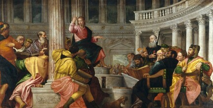
Barroco
XVII
Se distingue por el dramatismo, el uso de luces y sombras (claroscuro) y composiciones muy detalladas. Las obras buscaban impactar emocionalmente al espectador y transmitir intensidad. También se utilizó mucho en iglesias y edificios religiosos para expresar poder y generar una reacción en el público.
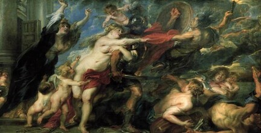
Neoclasicismo
XVIII
Retoma los valores del arte clásico como el orden, la simplicidad y la razón. Surge como una reacción al exceso del barroco y se inspira en culturas antiguas como Grecia y Roma. Se caracteriza por obras equilibradas, con temas históricos y una gran importancia en la disciplina y la claridad.
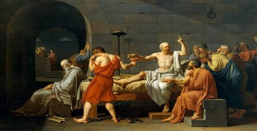
Romanticismo
XVIII-XIX
Se enfoca en la expresión de emociones, la imaginación y la naturaleza. A diferencia del neoclasicismo, le da más importancia a los sentimientos que a la razón. Las obras suelen mostrar paisajes, escenas dramáticas o situaciones intensas que reflejan el mundo interior del artista.
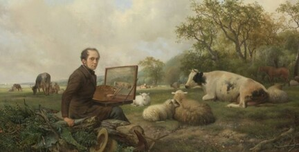
Realismo
XIX
Busca representar la vida cotidiana de forma objetiva, sin idealizarla. Se enfoca en mostrar la realidad tal como es, incluyendo aspectos sociales. Este movimiento surgió como una forma de mostrar la vida de las personas comunes, alejándose de los temas idealizados o románticos.
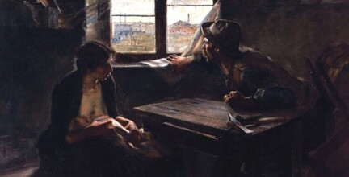
Obras Importantes
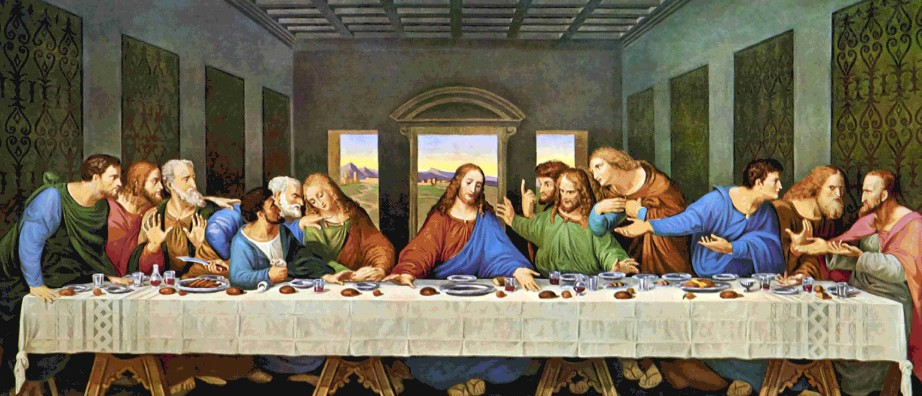
La ultima cena (1495–1498)
Leonardo da Vinci
Renacimiento
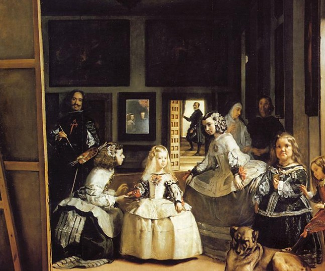
Las meninas(1656)
Diego Velázquez
Barroco
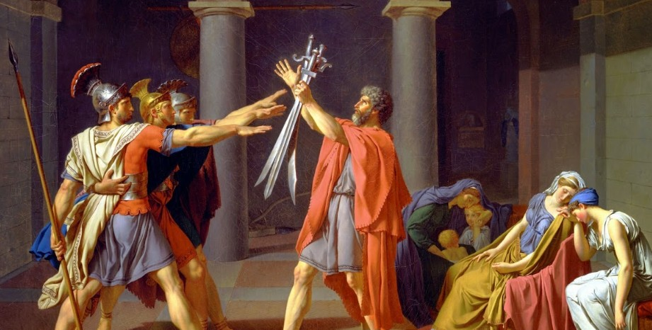
El juramento de los Horacios(1784)
Jacques-Louis David
Neoclasicismo
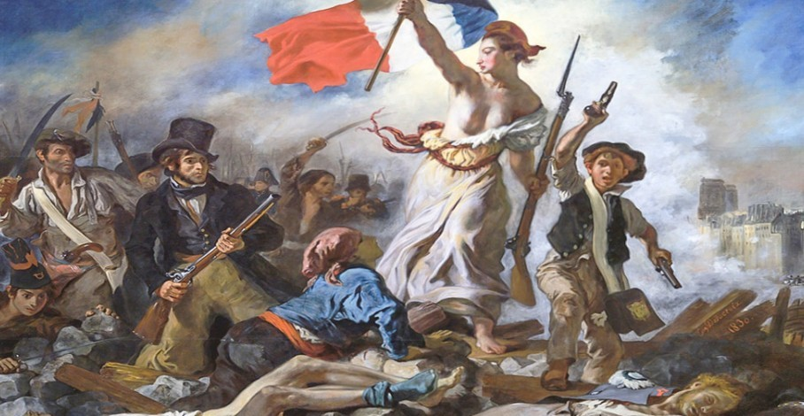
La libertad guiando al pueblo (1830)
Eugène Delacroix
Romanticismo
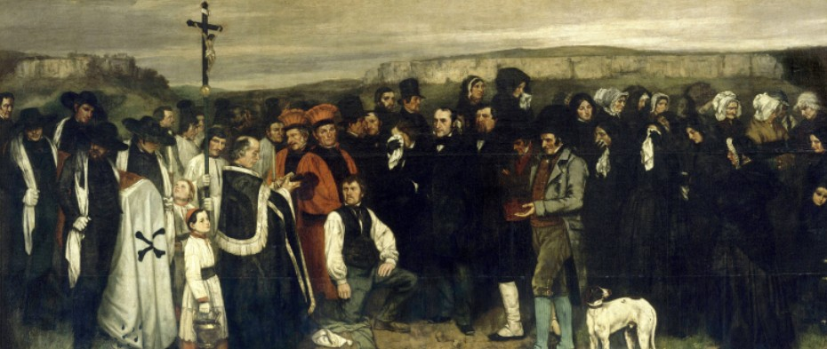
El entierro en Ornans (1849–1850)
Gustave Courbet
Realismo
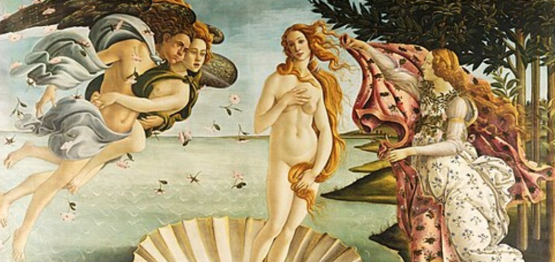
El nacimiento de Venus (1485–1486)
Sandro Botticelli
Renacimiento
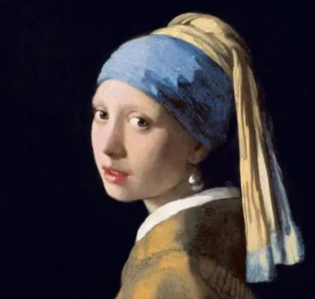
La joven de la perla (1665)
Johannes Vermeer
Barroco
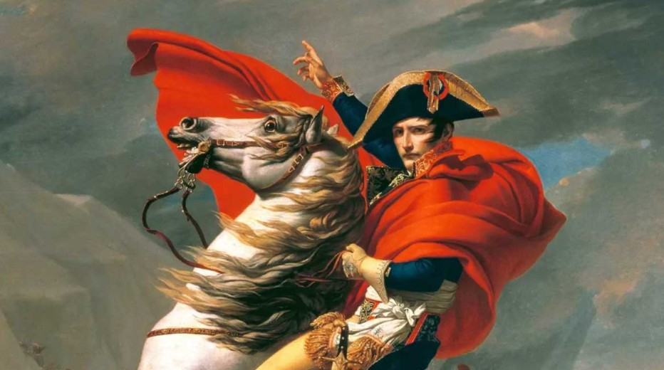
Napoleón cruzando los Alpes (1801)
Jacques-Louis David
Neoclasicismo